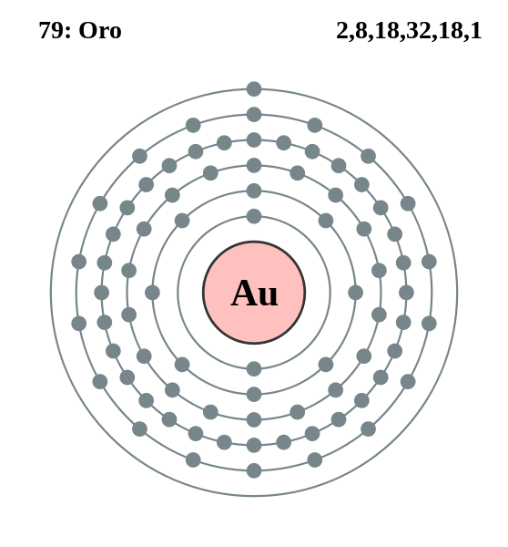

|
|
||
|
ORO El oro se encuentra como un metal libre en la naturaleza, se encuentra en las vetas y depósitos aluviales, y está asociado con telúridos, cuarzo y pirita. En su forma pura, es de un atractivo color amarillo metálico, pero puede ser negro, rubí o púrpura en cantidades más pequeñas. El oro, que es el metal más maleable y dúctil, se suele utilizar en aleaciones para aumentar su resistencia. Conduce el calor y la electricidad, refleja rayos infrarrojos y la mayoría de las veces no se ve afectado por el aire y las sustancias químicas. Algunos de los 18 isótopos del oro se usan en medicina para tratar el cáncer y la artritis. También se utiliza en joyería, decoración, en el campo dental y en chapados y revestimientos. |
 |
DATOS Número Atómico: 79 Peso Atómico: 197.00 Electronegatividad: 2,54 Configuración Electrónica: [Xe]4f145d106s1 Estados de Oxidación: +3,1 No. de Electrones de Valencia: 1 |